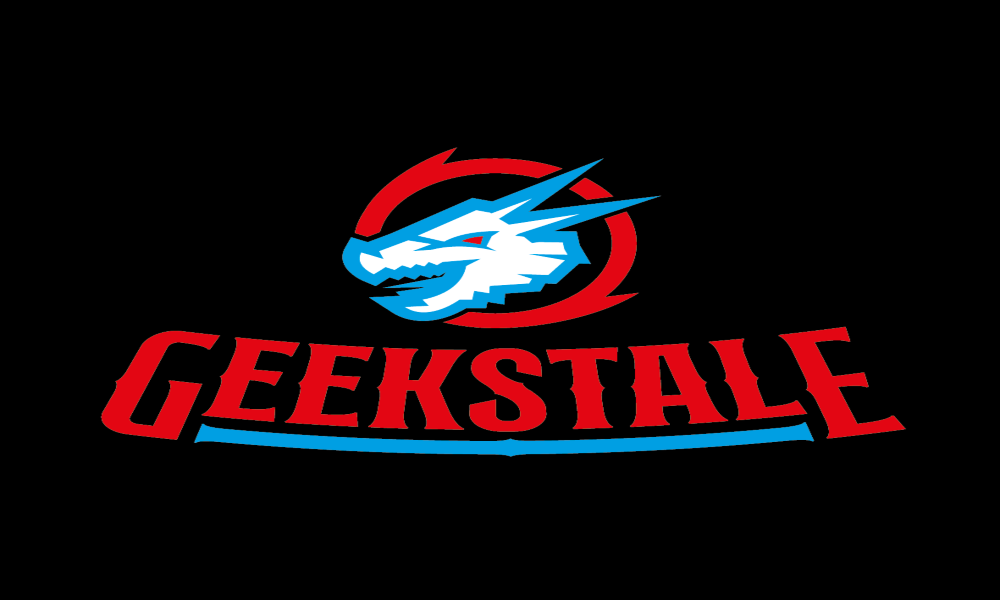
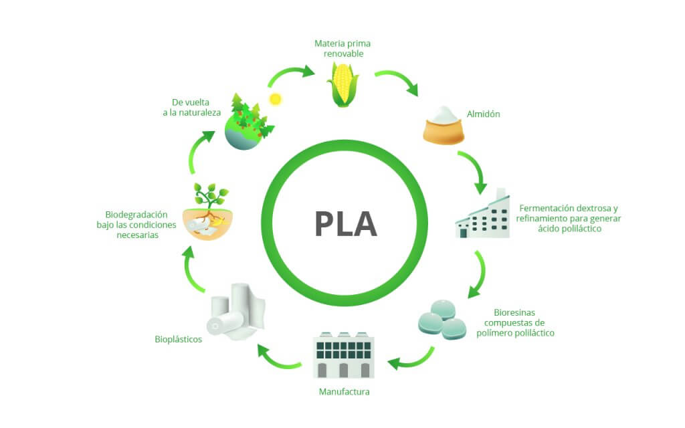
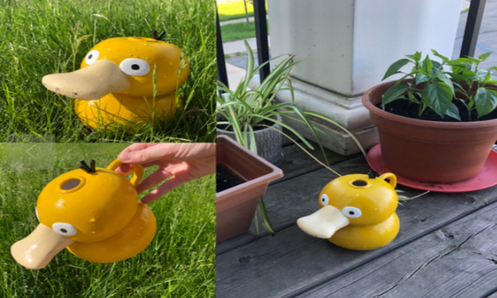

Bienvenidos a Geekstale



¿Qué es la impresión 3D?
La impresión 3D es un proceso de fabricación aditiva que permite crear objetos tridimensionales a partir de un modelo digital. Utilizando diferentes técnicas y materiales, se pueden producir prototipos, piezas funcionales y modelos personalizados.
Beneficios de imprimir en PLA
- El PLA (ácido poliláctico) es un material de impresión 3D biodegradable y fácil de usar.
- Es más amigable con el medio ambiente en comparación con otros plásticos.
- Se adhiere bien a la cama de impresión, reduciendo la posibilidad de deformaciones.
- Viene en una variedad de colores y acabados, ofreciendo opciones estéticas.
- Es seguro para el uso en contacto con alimentos (en ciertas condiciones).